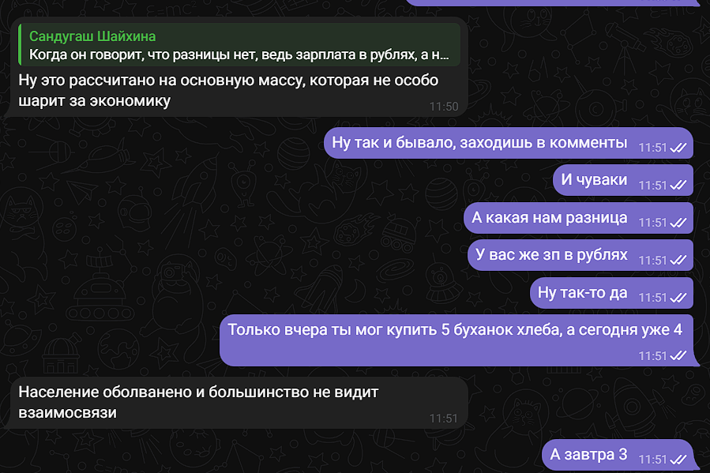
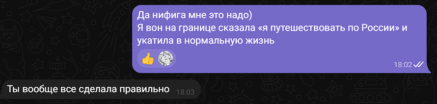
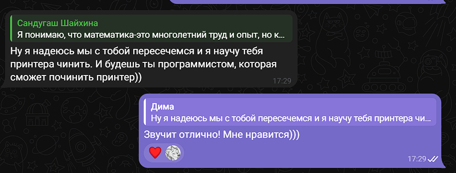
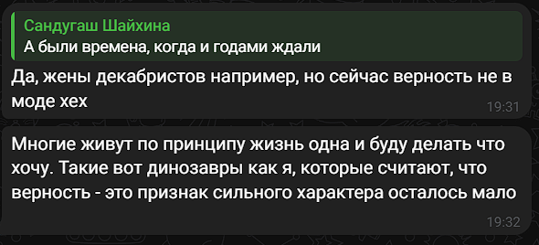
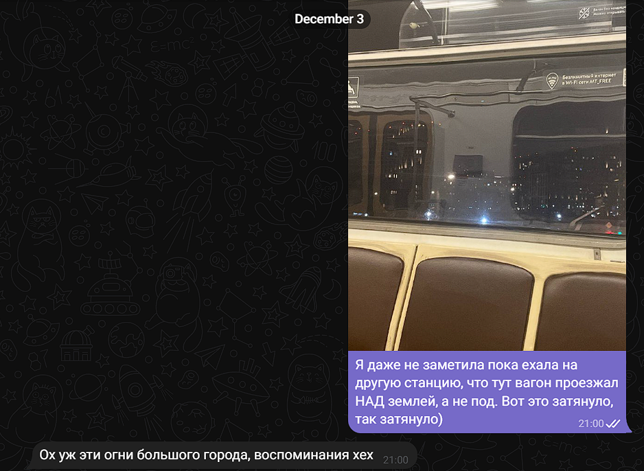
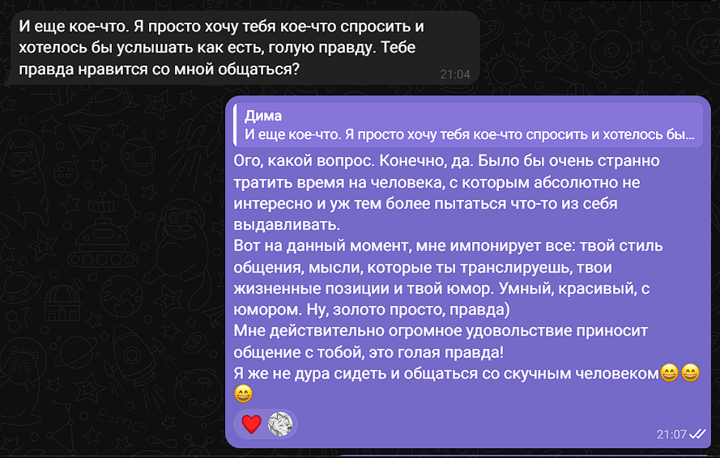
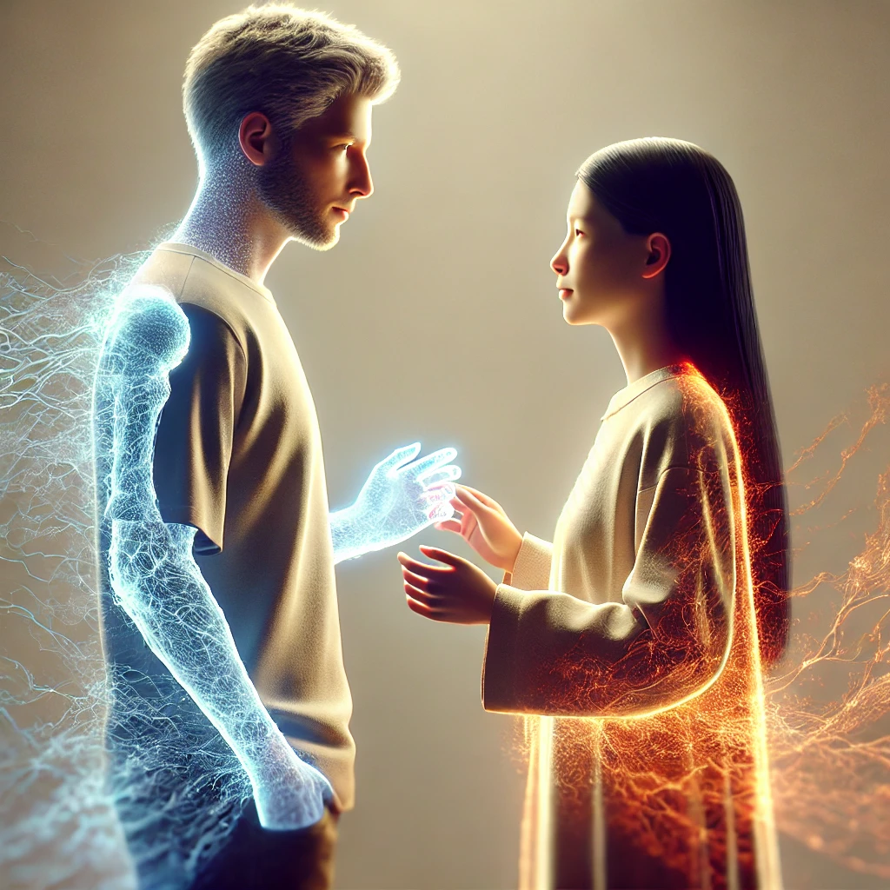

Сближение
Добро пожаловать на вторую страницу теперь!
Здесь я расскажу о том, как мы начали сближаться не только узнавая автобиографии друг друга, но и начало формирования новой связи, которую никогда не получится до конца объяснить, но я попытаюсь это сделать хотя бы каплей в океане.
Итак, начнем, пожалуй, с твоего юмора. Когда ты скинул мне это видео, подписав "Ну вот я примерно так же подхожу, когда меня зовут что-то починить😁", я реально выпала. Мне безумно нравится твой юмор и уже тогда я поняла, что с тобой, как минимум, мне будет смешно. Какая я глупая, даже еще не представляля этот минумум в реальных масштабах.
Ты рассказал мне о том, что не пьешь с 2018 года, и как я поняла, с 23-го февраля, потому что он был очень запоминающимся, но я так и не узнала, что там конкретно было кроме крови и ментов, но мне уже это говорило о том, что ты тот еще сорви голова. И да, мне это безумно нравилось, потому что если гулять, то гулять, даже несмотря на то, что ты это делал давно. Но сам факт, что в тебе сидит это зернышко приключений на пятую точку-мне понравилось.
Также ты рассказал мне о двух повестках. Но меня так удивило, как спокойно ты это объяснил: "Нет, пришлось пожить на съемной квартире. Мне сначала прислали повестку по почте и я ее выкинул. Потом со своей квартиры уехал на съемную. Позже месяца через два пришла бабка какая-то к моей матери и она сказала, что я за границу уехал. Все)". Я в тот момент подумала "Что значит все?) Это что за такое спокойное отношение к такой ситуации? Во дает))"
И вот начинается, пожалуй, самая интересная часть после того, как я поняла, какой ты умный. Я начинаю узнавать совершенно новые качества, которые имеются у тебя. Нет, дело, очевидно, не в том, что ты считаешь население глупым. Тут, конечно, Америку не открыли, но я увидела, как ты спокойно и резко отзываешься в негативном ключе, не боясь осуждения, четко придерживаясь своего мнения и это не могло не восхитить на самом деле.
А еще позже и я начала делиться своим мнением. И о чудо, мне никто не доказывал, как я буду жалеть о своем решении, что без диплома мне будет тяжело и прочее. И тут я слышу:
Наверняка ты задашься вопросом, а зачем я лью эту воду, что в этом такого? А я отвечу! Это буквально какие-то первые моменты, в которых зарождалось наше тотальное понимание того, как каждый из нас видит мир, наши реакции и наше отношение к окружающим вещам. Самое удивительное, что мы мыслим одинаково, понимаем друг друга и чувствуем. Будто где-то во многих других жизнях мы уже были вместе... Я скептик, но иначе я не опишу это состояние.
А еще пару раз ты опрометчиво вкинул фразы в духе "Готовься, поедешь со мной" или вот этот скрин меня вообще умиляет:
На тот момент я даже немного с ухмылкой к этому относилась, потому что даже не подозревала во что все это вырастит... Ну, общаемся, безумно интересно и все ближе узнаю его, круто... А что потом? Понятия не имею. Конечно, с высоты уже сложившихся наших взаимоотношений меня это умиляет и забавляет, но я помню все еще те ощущение, будто эта встреча еще неизвестно когда произойдет и вообще все по воде писано. И знаешь, это кстати, одна из идей была: запечталить по максимуму свои ключевые эмоции и ощущения, чтоб мы могли перечитывать эту историю и вспоминать, как ты рассказывал мне про сборку ПК в 8 классе(и не только это, конечно). Да, я по сей день в шоке!!!
Знаешь, я не стала буквально все выжимать из нашего общения и лишь беру то, что мне кажется ключевым, так вот, мне сейчас очень бросилось в глаза следующее:
Мне тогда было очень жаль, что ты так считаешь и хотелось прыгать и махать руками, крича "ВООТ ЖЕ Я, ПОСМОТРИ!". Потому что я всегда мечтала иметь такого человека ради которого мне будет плевать на весь остальной мир и я готова буду броситься и в огонь, и в воду, и на край света. От того и безумно больно по сей день, что мою жертвенность не смогли оценить по достоинству и я закрылась от всего мира и от всех мужчин, все они были искусственными, поверхностными, только и гордились наличием денег, а больше и нечем гордиться. Ради таких не то, что на край света, ради таких я из дома в подъезд выходить не хотела. И представь теперь мое ощущение, когда я встречаю человека, который мыслит схоже, зацепил по всем фронтам, красивая внешность, красиво выражает мысли, с чувством юмора, я уже начинала в тот момент понемногу привязываться. Ничего сверхъественного, всего лишь зарождение невероятной тяги))) пустяки же)))
И вот в этот момент я перестала что-то замечать кроме тебя вокруг. Только ты...
Ты просто заставил не только ощущать, как жизнь начинает приливать к моему телу и душе, но и остановил весь мир вокруг меня.
Давай без лишних слов я просто это вставлю сюда.
Я даже не очень догадывалась, почему ты вдруг так резко решил задать этот вопрос мне, но это подвод к признанию о твоем самом главном скелете в шкафу. И да, мы оба наверняка надолго запомним эти эмоции: твои переживания и мое восхищение от этого преступления. Расскажи мне потом, пожалуйста, подробнее, что ты подумал и испытал, когда увидел, что для меня это не повод для прекращения общения. Наверняка ты рассказывал, но я хочу вновь послушать все это. И да, документирую для нашего будущего: я наверное в тот момент не только восхитилась, но и видимо влюбилась по уши окончательно))) Хоть и не подавала особо признаков))
Тогда еще я выкинула такую фразу "Можно мы поженимся просто, чтоб я детям эту историю рассказывала?)" и знаешь, будь я мужчиной, то реально рванула бы с кольцом только, чтоб рассказать это будущему потомству. Шучу, конечно, не только поэтому.
А на следующий день ты мне прислал свое голосовое, в котором рассказывал некоторые моменты из книги. И черт возьми, хочешь правду? Мне было так тяжело сконцентрироваться на содержимом голосовом, потому что у меня крышу сносило от твоего голоса. Он настолько приятный, моментами прям низковатый, четко разделенные слова и такая нерасторопная речь просто покорило мое сердце.
Мы общались так, будто у нас вообще никаких дел не существует, словно весь мир ушел на второй план и теперь есть только ты и я. Потому что я наблюдаю за нашим общением, оно просто не прекращается никак, с такой жадностью рассказываем друг другу обо всем, как будто не виделись лет 100 и надо срочно рассказывать, как прошли годы. А еще ты мне записал голосовое по моей просьбе рассказать о категориях в тюрьме. Романтичное начало, мне нравится😁
И да, я думаю твое признание нас сильно сблизило, потому что после этого у нас начинается лютый завал комплиментами, улыбочки всякие)))) И это, пожалуй, вторая глоабльная точка по укреплению связи между нами. Для меня ты становился все многограннее и многограннее. Я знала, что ты очень умный, красивый, но вот чтоб теперь окончательно убедиться, что передо мной живой Мориарти...) Все, ты выстрелил контрольной стрелой мне в сердце и захватил без всякого боя всю меня: начиная от малейших флюидов моей души, заканчивая всяким атомом моего тела.
